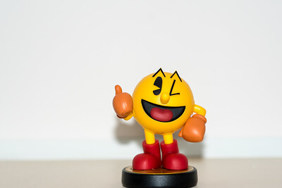

5 Interesting facts on Pac-Man!
1. Pac-Man's Original Name

Pac-Man's
2.
3.
4. All Time High Score

The highest score you can get on an original Pac-Man arcade machine is
Pac-Man's
The highest score you can get on an original Pac-Man arcade machine is